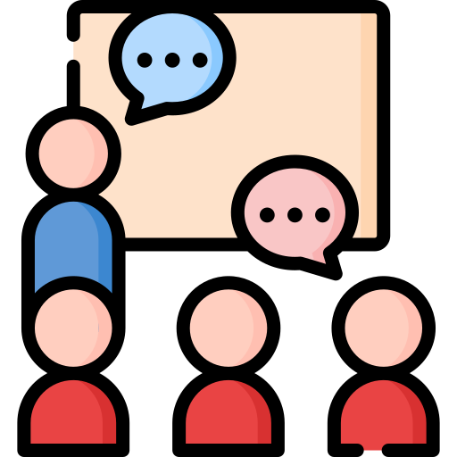

Présentation
Je m'appelle Valentin, j'ai 20 ans et je suis actuellement en deuxième année de DUT Informatique.
Je suis depuis toujours passionné par la technologie et depuis quelques années : l'informatique.
J'ai commencé à apprendre l'informatique lors de mon année de Terminale, lors d'un projet de mon cours d'Informatique et Sciences du Numérique.
J'ai très facilement accroché et beaucoup apprécié, c'est pourquoi j'ai décidé de continuer mes études en DUT Informatique.